Hunter Douglas
$6M Rescue
60 Days Out
Client-developed accessory failed production validation 60 days before a nationwide launch. 24,000 books already mid-production. Zero native CAD. Zero CapEx budget. Immovable launch date. Delivered a functional prototype in 7 days. Shipped on time.

The Context: A Two-Year Blind Spot
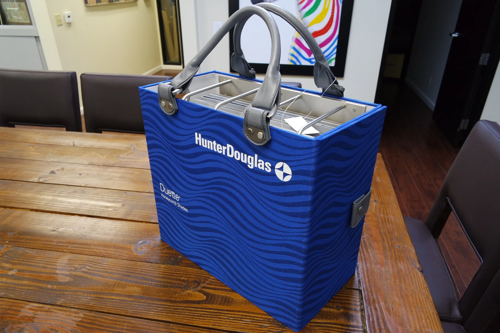
Sampling International was one of the largest window covering sample book manufacturers in the world. Hunter Douglas was their most important client. The 2016 Duette Honeycomb relaunch was Hunter Douglas's halo program, a full redesign of their premium sample book with one major innovation: horizontal swatch arrangement instead of vertical, allowing multiple swatches to expand simultaneously for side-by-side color comparison.
For 24 months, the sample book program had been in development. Hunter Douglas had simultaneously been developing a companion accessory, a window cling device that would allow retail consultants to attach the horizontal swatch decks directly to a customer's window, showing exactly how the shade would look in situ. Sampling International was told only to "reserve space" in the book. They never saw the accessory design. They weren't involved in its development.
I had been at the company for a few months when I was pulled into a client meeting. That's where I learned: the accessory had failed production validation. Launch was 60 days out. 24,000 books were mid-production. Hunter Douglas was asking if we could step in.
The Box: Hard System Constraints
Before designing anything, I needed to understand exactly what I couldn't change. The constraints weren't preferences. They were locked.
Immutable constraints
- Sample book geometry: Finalized, in mid-production. Nothing about the book could change.
- 24,000 committed units: Books already in production with magnetized swatch decks installed. 60+ decks per book, magnets already embedded.
- Zero CapEx: No budget for new tooling, molds, or machinery of any kind.
- Existing processes only: Any solution had to be manufacturable with current in-house capabilities.
- Immovable launch: Nationwide retail launch date was fixed. Non-negotiable.
- No native CAD: Only a single static rendering of the failed design was provided. No dimensions, no specs, no access to the original engineers.
Autopsy of the Failed Architecture
The failed design was a multi-part injection-molded rigid plastic mechanism. Working from nothing but a single static rendering with no dimensions, no specs, and no access to the original engineers, I could still identify four structural problems that made it incompatible with the program constraints regardless of whether it functioned correctly mechanically.
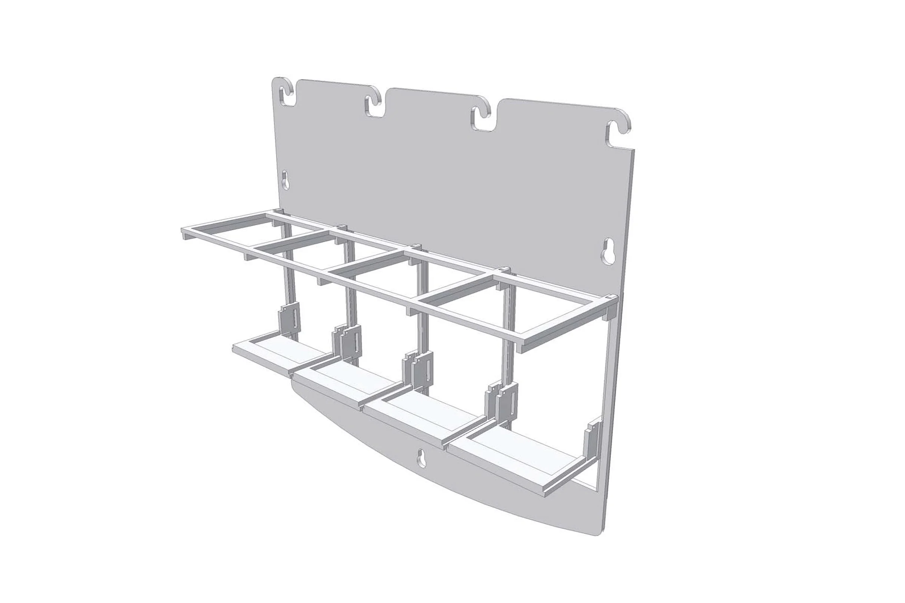
Tolerance dependency: Multi-part sliding and hinge interfaces required tight molded tolerances to function correctly. The mechanical complexity of the movement itself made reliable, consistent operation at scale inherently difficult.
Cost-complexity coupling: An injection-molded multi-part mechanism for a sampling accessory was architecturally disproportionate. The cost per unit would be high, and under a zero-CapEx constraint, new injection tooling was simply not an option regardless of timeline.
Mechanical exposure: High part count meant cumulative failure probability under field handling. A design consultant carrying sample books in and out of homes would encounter abuse conditions the mechanism wasn't designed for.
Operational burden: Multi-step deployment added user friction that shouldn't exist in a field sales tool.
The failure wasn't time-to-design. It was time-to-discover. The architecture failed at validation because it was misaligned with the program's real constraints from the beginning.
Field Research: Understanding the Use Case
Before designing anything, I got direct input from HD's brand manager overseeing the program, who had aggregated feedback from field sales reps and training sessions across the country. In addition, I went to three Hunter Douglas design center retail locations and talked directly to the design consultants about how they used sample books with clients in the field. Between both sources, the use case became clear.
The interaction had to be self-explanatory and minimal-action. A consultant with a client standing next to them can't fumble with a multi-step mechanism while trying to present swatch samples. The device had to be intuitive enough that the client could operate it with ease after watching once. If the mechanism wasn't immediately obvious, it was already a design failure.
The Polysheet Discovery
The zero-CapEx constraint eliminated injection molding immediately. No new molds, no new tooling. I went looking through old sample books for materials that were already part of the production ecosystem.
Most sample book pages were printed polysheet, a semi-rigid plastic sheet material used throughout Sampling International's production. We had scrap everywhere. I started doing cut and bend tests. Polysheet behaves like origami: it folds cleanly on score lines, holds a bend, and retains spring tension. You can create a live hinge. You can use the inherent spring tension of the material as a functional element rather than fighting its natural behavior.
With an X-Acto knife and high-strength double-sided tape already used in book construction, I assembled a rough polysheet mockup in under ten minutes. It was enough to verify that the material's spring tension could hold a sample deck horizontal and allow the honeycomb cells to deploy. Functional logic confirmed in its crudest form before committing any further time.
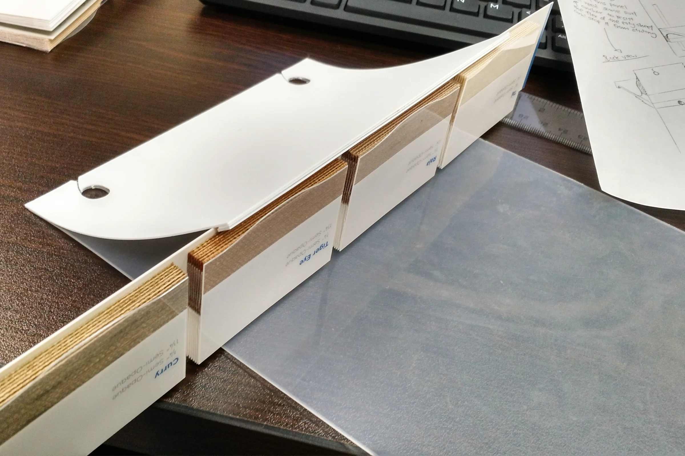
The next problem was deployment. The client's failed design required multiple hands and multiple steps. I needed to reduce it to a single action. The concept: a spring-latch where raising the deck causes it to self-latch into position. I validated this with two sticky notes folded into the approximate geometry. The paper version worked exactly as predicted. That was enough to know the direction was correct.
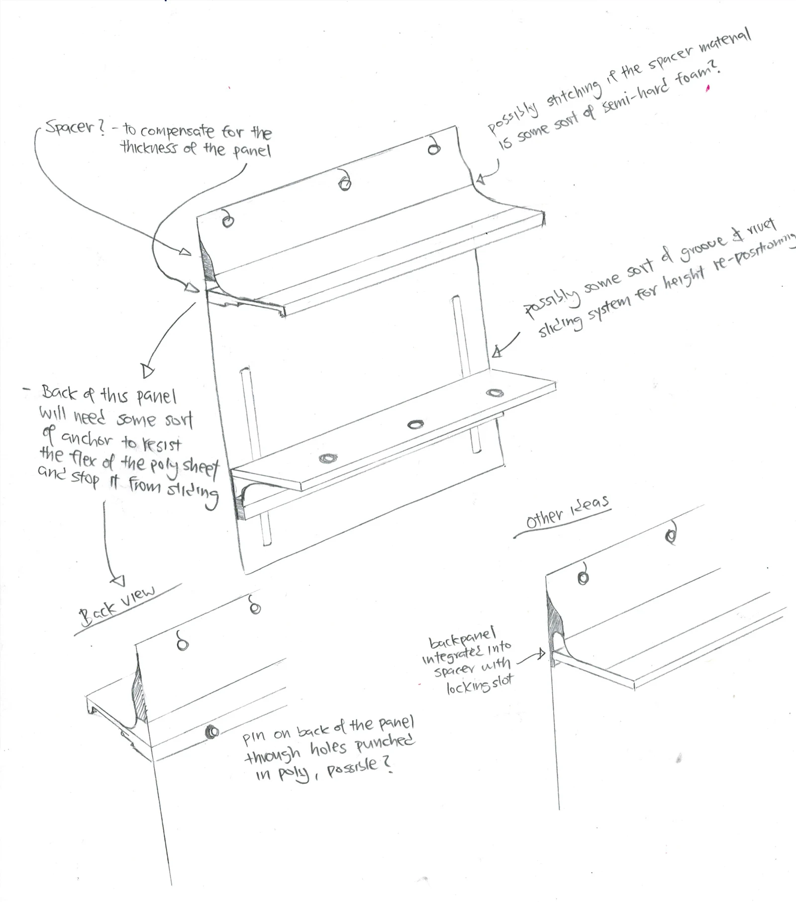
I then moved to CAD to establish dimensions and verify the geometry, confirming the self-latching action worked correctly and that everything was properly sized for the swatch decks. The final architecture used polysheet for every functional role simultaneously: spring tension for the latch mechanism, live hinge for the deployment action, and origami folding to create rigid structural platforms from flat sheet stock. No rigid inserts, no additional materials, no new processes.
The Magnet Polarity Problem: 20+ Failed Ideas
The swatch decks attached to the sample books via velcro patches. The honeycomb cells within each deck were held closed by embedded magnets, one per swatch, attracting against a metal disk in the backing material. Those same embedded magnets were the obvious attachment mechanism for the window cling: strong, clean, and already present in every deck without adding any new components.
However, the polarity of those embedded magnets was guidelined but never strictly controlled during manufacturing. It didn't need to be. The magnets held each honeycomb cell closed against a metal disk; which pole faced which direction was not crucial for that function. But repurposing them as an attachment mechanism exposed a critical manufacturing variance: across millions of embedded magnets, polarity was effectively random. A single reversed magnet in a 4-swatch deck would cause attachment failure in the field. There was no path to guaranteeing consistent polarity across 24,000 books.
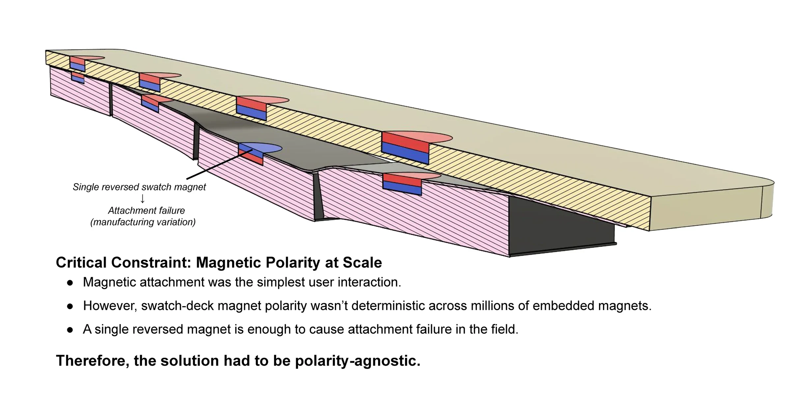
I spent days testing ideas. Magnets glued to scored polysheet platforms. Magnets on rubber bands. Magnets on arched spring arms. Most worked in theory. None were reliable in practice. Too sensitive to multiple factors, not elegant enough for manual mass production.
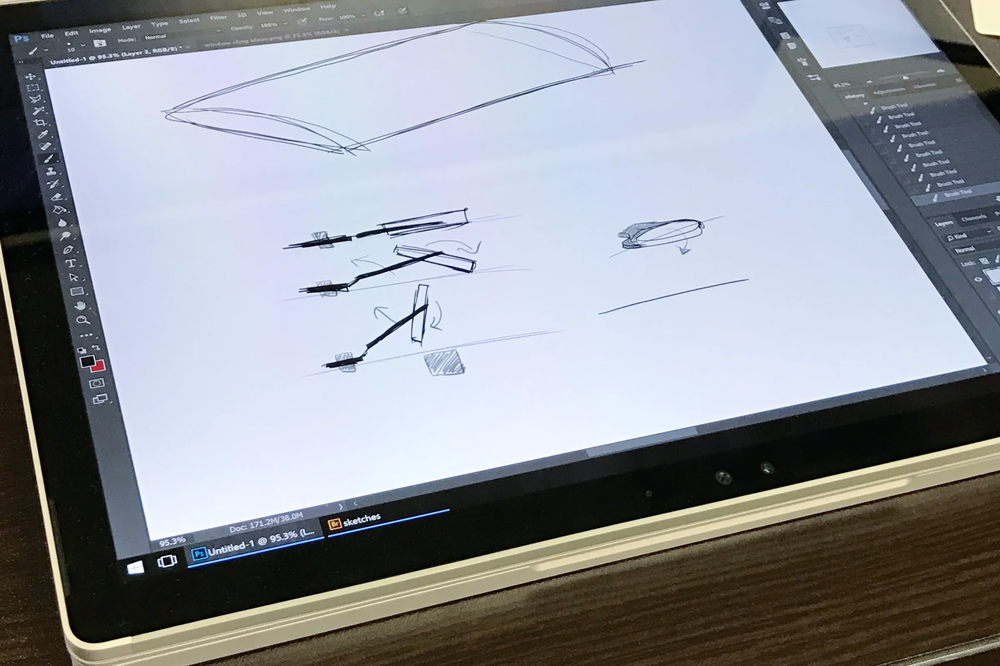
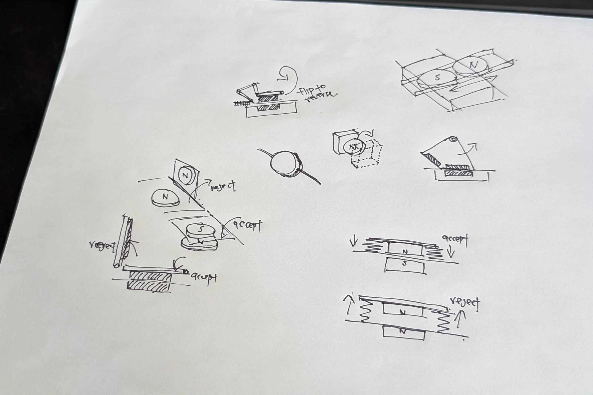
The Breakthrough: A Soda Can in a Parking Lot
The breakthrough came off the clock. Walking across a parking lot, I accidentally kicked an empty soda can someone had thrown on the ground. It tumbled and rolled before coming to rest. In that moment the solution was obvious.
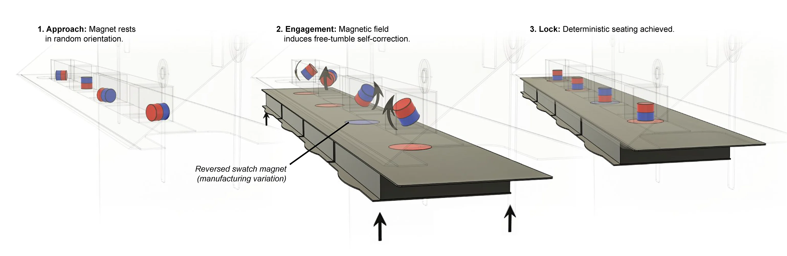
The magnets don't need to be attached to anything that constrains their movement. They just need a cavity to tumble freely in. A magnet in a free-rotating cavity will naturally align itself with whatever magnetic field it encounters on approach, including a reversed one. The cavity magnet self-corrects to match the swatch deck magnet regardless of what polarity it presents. The unknown, uncontrollable orientation of the swatch deck magnets becomes irrelevant.
The next morning I hand-constructed a crude mockup out of clear polysheet with magnets enclosed to test the theory. Shuffled the magnets into random orientations and tested attachment on approach. The magnets self-rotated and self-aligned into perfect attachment every time. The physics worked.
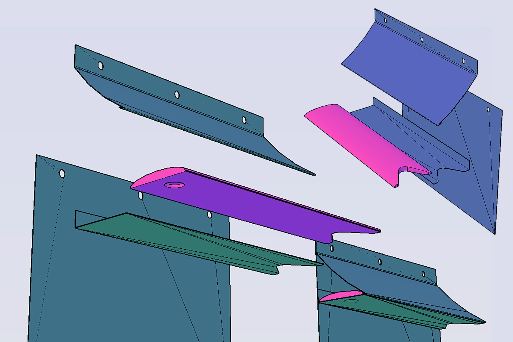
I then 3D-printed four cylindrical magnet cavities to refine the cavity geometry, and built a concept prototype window cling in under 20 minutes using only materials the factory already used; polysheet folded, scored, and taped throughout, with the 3D-printed cavities embedded where the magnet pockets needed to be. For the first time, all three solutions worked together in a single prototype: the polysheet spring tension for latching, the rigid folded deck with live hinge as structure, and the tumbling magnet cavities for polarity-agnostic attachment. The prototype had to look finished enough to bring to management as a complete solution, not just a proof of physics. That's what it became.
From Proof of Concept to Production: 7 Days
With the combined prototype validating all three systems working together, the next step was turning it into a manufacturable design. The 3D-printed magnet cavities were a stand-in, they had to be replaced with something the factory could produce at scale using existing processes. The solution was to fold the cavities out of polysheet itself. A single scored and folded polysheet strip formed all four cavity cells, enclosing the tumbling magnets in the correct locations without any manual alignment or additional tooling. The entire window cling, including the magnet cavities, was now constructible entirely from flat polysheet stock using existing die-cutting and assembly workflows.
I worked out the final geometry in CAD, locking in every dimension, tolerance, and adhesive placement. Full prototype in 7 days, presented to key stakeholders at Sampling International. The design then went into production engineering — working remotely with the factory's production engineers in China to validate that every assembly step could be performed reliably by workers on the line at scale. Each step reviewed and confirmed before the master pattern was submitted.
The DFM master pattern returned 1:1 unchanged from factory engineering review. No adjustments required. The design was manufacturable as submitted.
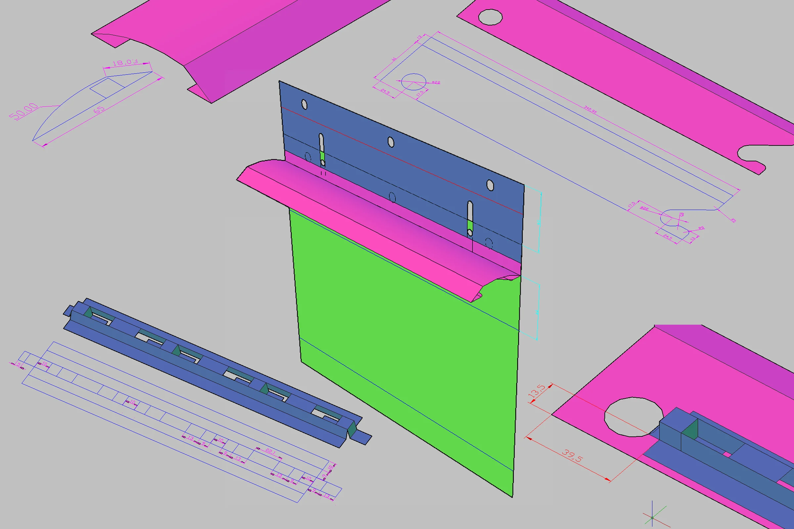
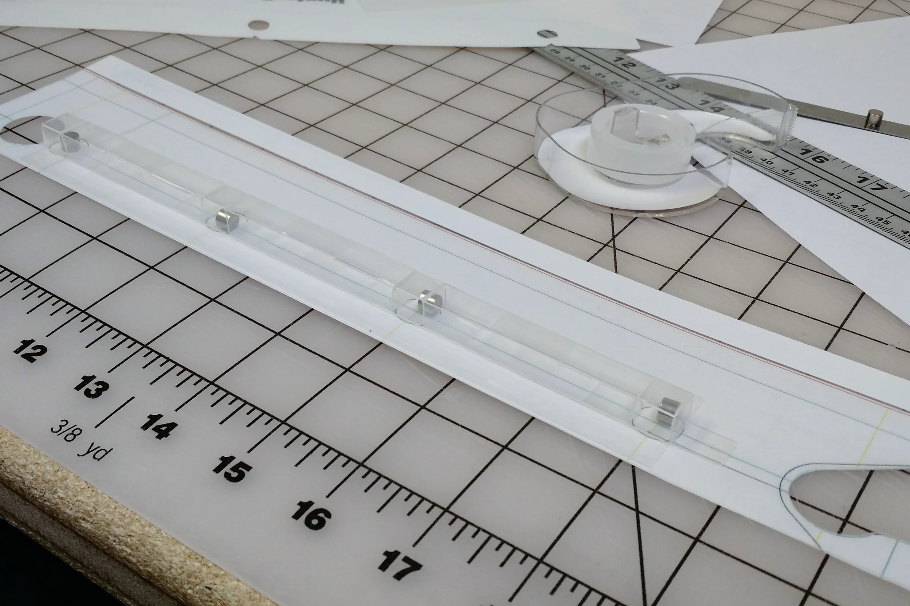
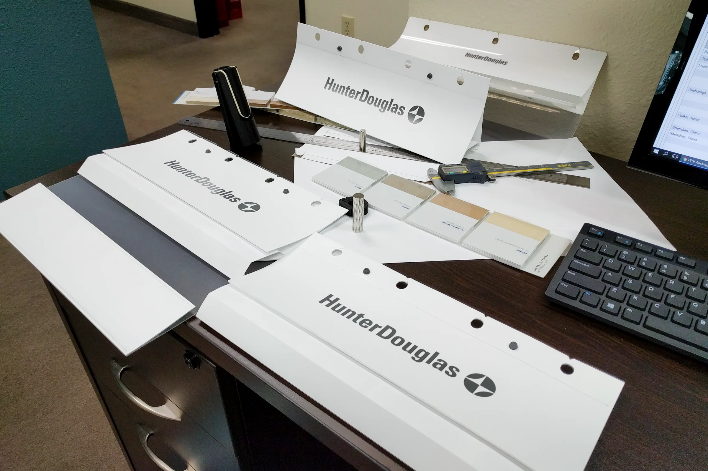
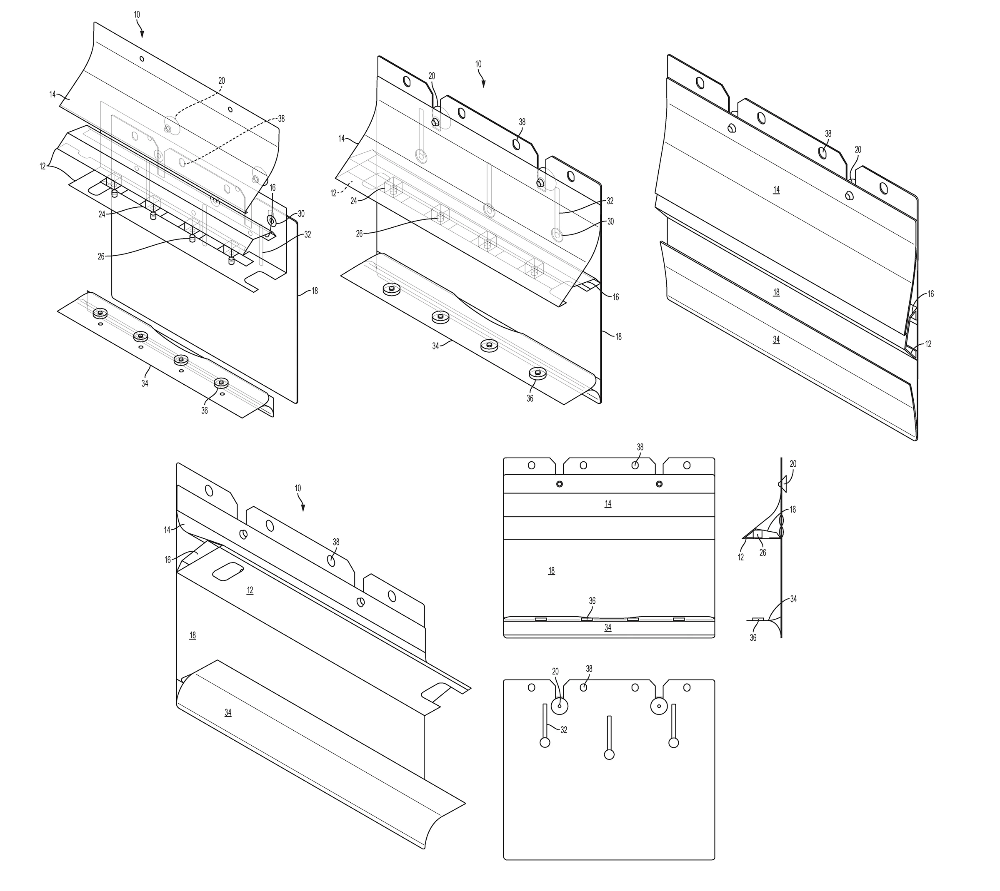
Execution: 24,000 Units, On Time
24,000 units integrated into the Duette sample books and shipped for the nationwide launch. No delay. At their annual summit, the Hunter Douglas Co-President took the window cling apart in front of 30 affiliate executives. He was a mechanical person who wanted to understand how the problem had been solved.
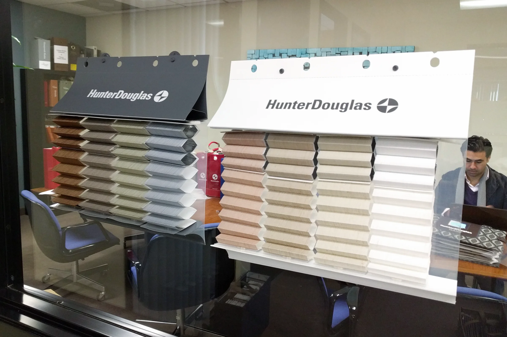
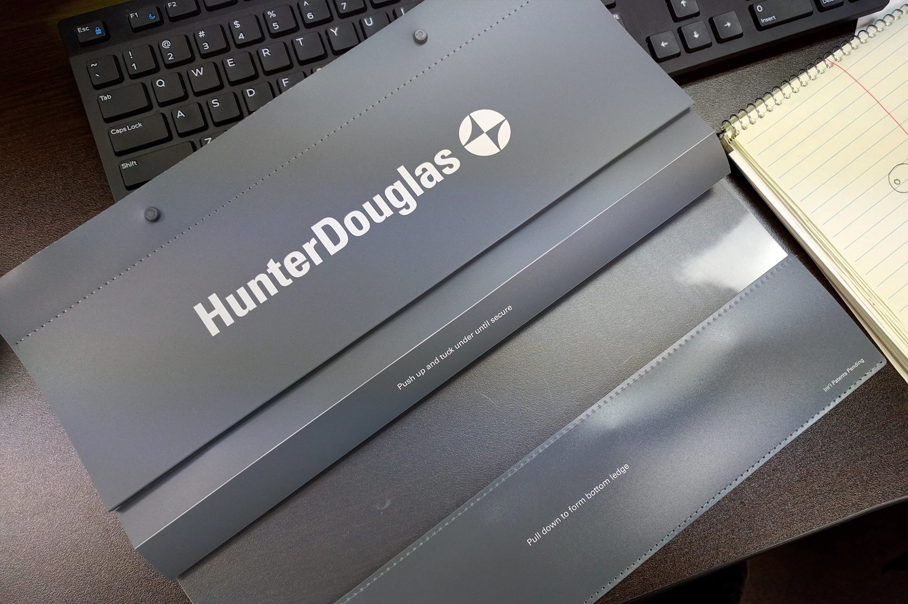
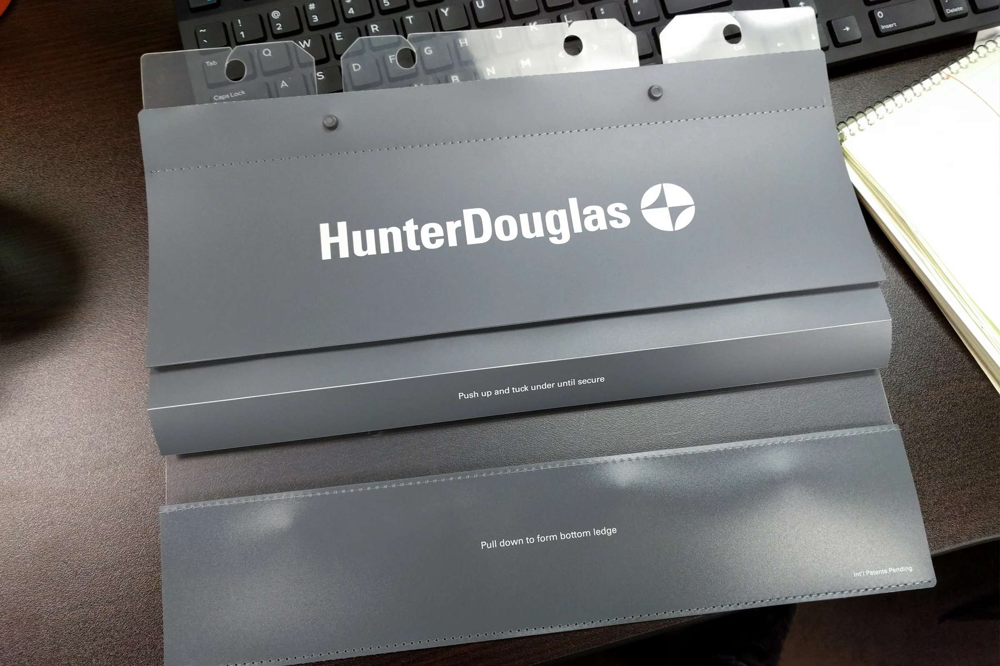
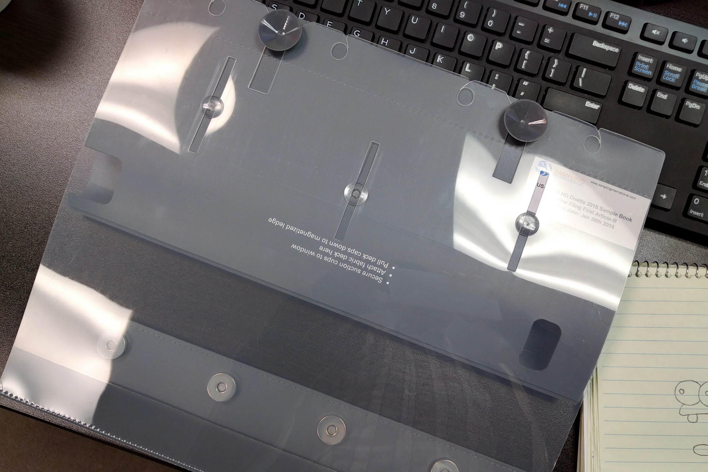
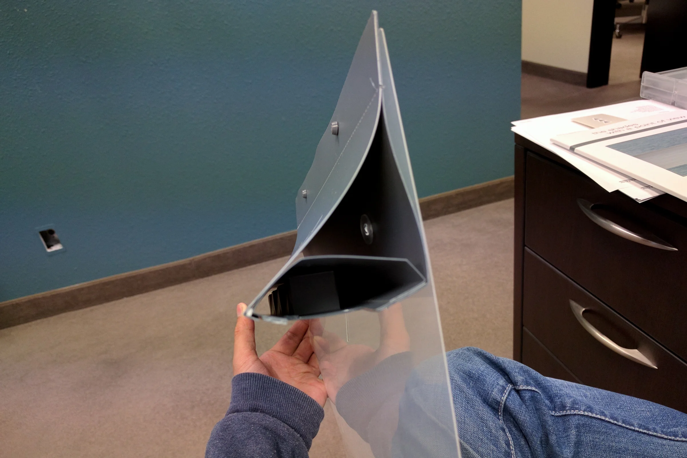
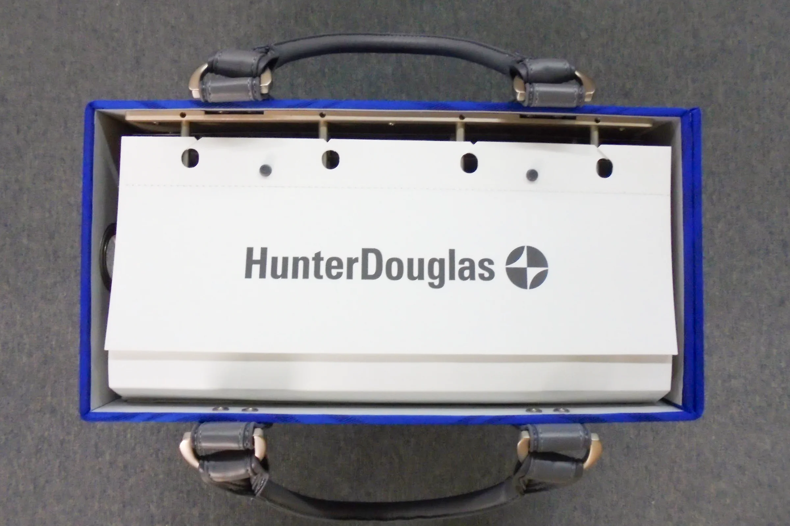
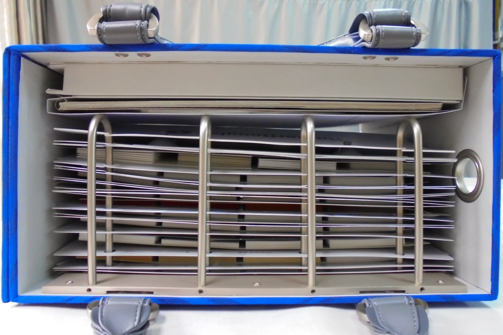